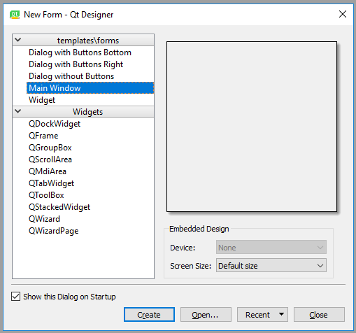
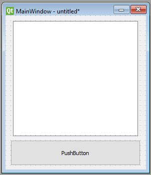
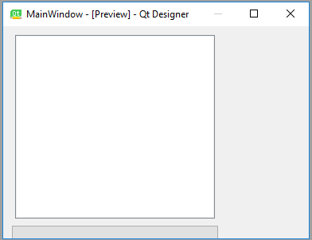
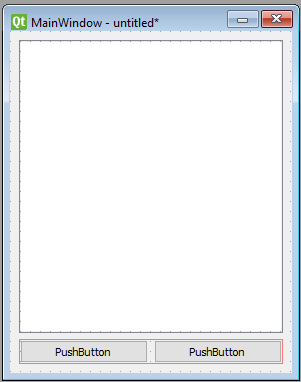
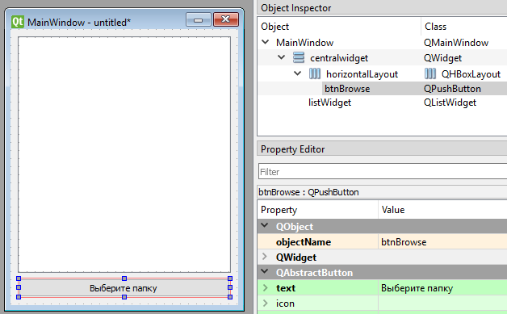

Лекция 2. GUI на PyQt и Qt Designer¶
Tkinter — простой, но ограниченный: устаревший внешний вид, скромный набор виджетов, отсутствие визуального дизайнера. Для серьёзных десктопных приложений в мире Python берут PyQt или PySide — привязки к C++-фреймворку Qt.
Что входит в Qt:
- набор виджетов и стилей оформления (под все основные ОС);
- работа с базами данных через SQL (ODBC, MySQL, PostgreSQL, Oracle, SQLite);
- работа с XML, JSON, регулярными выражениями;
- мультимедиа (видео, аудио);
- WebEngine (встроенный браузер на Chromium);
- мощная система сигналов и слотов для обработки событий;
- интернационализация (i18n);
- Qt Designer — визуальный редактор окон.
Параллельно существуют PyQt6 (от Riverbank Computing, GPL/коммерческая) и PySide6 (официальная от Qt Company, LGPL). API почти полностью совпадает — выбирают чаще PySide6 ради LGPL-лицензии.
В лекции примеры на PyQt6 — для PySide6 достаточно заменить from PyQt6... на from PySide6....
Минимальное окно вручную¶
Окно можно «нарисовать» прямо в коде, как и в Tkinter:
import sys
from PyQt6.QtWidgets import QApplication, QWidget
app = QApplication(sys.argv)
w = QWidget()
w.resize(250, 150)
w.move(300, 300)
w.setWindowTitle("Простое окно")
w.show()
sys.exit(app.exec())
Структура любой PyQt-программы:
QApplication(sys.argv)— единственный экземпляр на программу, управляет циклом событий и платформенными штуками.- Создаём окна и виджеты.
app.exec()— запускаем цикл событий (в Tkinter эту роль играетmainloop()).
Для маленьких форм код в стиле «всё руками» приемлем. Но как только виджетов становится больше десятка — нужен дизайнер.
Qt Designer¶
Qt Designer — визуальный редактор .ui-файлов (XML с описанием окна). Поставляется отдельно:
# Через uv добавим инструменты, в которых лежит designer
uv add pyqt6-tools
# либо для PySide6 — designer идёт сразу в коробке
uv add pyside6
После установки Qt Designer запускается командой pyqt6-tools designer (или pyside6-designer).
Создание формы¶
При запуске Qt Designer показывает диалог новой формы — выбираем Main Window и нажимаем Create:

Появляется заготовка главного окна. Слева — палитра виджетов (Widget Box), справа — иерархия объектов (Object Inspector) и редактор свойств (Property Editor).
Если меню и строка состояния не нужны — удалите их через Object Inspector (правый клик → Remove).
Добавляем виджеты¶
Перетащите на форму, например, List Widget (не List View) и Push Button:

Нажмите Form → Preview — увидите окно с расставленными элементами. Но что произойдёт при изменении размера окна?

Виджеты остались на своих абсолютных позициях, не следуя за окном. Чтобы UI был «резиновым», используют layouts (макеты).
Layouts¶
Макет — это контейнер, удерживающий виджеты в нужной геометрии при изменении размера окна. Самые ходовые:
- Vertical Layout — друг под другом;
- Horizontal Layout — в ряд;
- Grid Layout — таблица;
- Form Layout — пары «подпись : поле ввода».
Кликните правой кнопкой по Main Window в Object Inspector → Lay Out → Lay Out Vertically. Теперь добавленные виджеты раскладываются по вертикали и тянутся вместе с окном.
Макеты можно вкладывать друг в друга. Например, горизонтальный с двумя кнопками внутри вертикального:

Имена и свойства¶
В Property Editor меняйте objectName каждого виджета на осмысленное имя — именно по нему вы будете обращаться к нему из кода.
Хорошая практика: давать кнопкам префикс btn, полям ввода — le (line edit), спискам — lw (list widget). Это «венгерская нотация» — она помогает быстро понимать тип:

Например:
btnBrowse— кнопка «Открыть папку»;listWidget— список содержимого.
Сохраните форму как design.ui в каталоге проекта. Это обычный XML-файл, который можно как использовать напрямую, так и сконвертировать в Python-код.
Превращаем .ui в Python: pyuic6¶
Утилита pyuic6 генерирует design.py из design.ui:
В design.py появится класс Ui_MainWindow с методом setupUi(self, MainWindow), который собирает виджеты на форме.
Сгенерированный файл никогда не редактируйте руками — он перезатирается при каждой регенерации.
Логика приложения¶
Создаём отдельный main.py, в котором наследуемся от QMainWindow и от сгенерированного класса формы:
import sys
from PyQt6 import QtWidgets
from design import Ui_MainWindow
class ExampleApp(QtWidgets.QMainWindow, Ui_MainWindow):
def __init__(self) -> None:
super().__init__()
self.setupUi(self)
if __name__ == "__main__":
app = QtWidgets.QApplication(sys.argv)
window = ExampleApp()
window.show()
sys.exit(app.exec())
Запускаете — окно показывается, но кнопка ничего не делает. Привяжем обработчик.
Сигналы и слоты¶
Главная идея Qt — сигналы и слоты. У каждого виджета есть сигналы (например, у кнопки clicked, у поля ввода textChanged), к которым можно подключить слот — обычную функцию или метод.
self.btnBrowse— объект кнопки (имя задано в Qt Designer);clicked— сигнал «по кнопке кликнули»;connect(...)— подключение слота;self.browse_folder— метод, который выполнится при клике.
Полный пример: показать содержимое папки¶
import os
import sys
from PyQt6 import QtWidgets
from design import Ui_MainWindow
class ExampleApp(QtWidgets.QMainWindow, Ui_MainWindow):
def __init__(self) -> None:
super().__init__()
self.setupUi(self)
self.btnBrowse.clicked.connect(self.browse_folder)
def browse_folder(self) -> None:
self.listWidget.clear()
directory = QtWidgets.QFileDialog.getExistingDirectory(self, "Выберите папку")
if not directory:
return
for file_name in sorted(os.listdir(directory)):
self.listWidget.addItem(file_name)
if __name__ == "__main__":
app = QtWidgets.QApplication(sys.argv)
ExampleApp().show()
sys.exit(app.exec())
QFileDialog.getExistingDirectory(...) показывает стандартный системный диалог выбора каталога и возвращает абсолютный путь либо пустую строку, если пользователь нажал «Отмена».
Перехват закрытия окна¶
Иногда нужно спросить пользователя перед закрытием — переопределяем виртуальный метод closeEvent:
from PyQt6.QtWidgets import QMessageBox
def closeEvent(self, event) -> None:
reply = QMessageBox.question(
self,
"Подтверждение",
"Точно закрыть программу?",
QMessageBox.StandardButton.Yes | QMessageBox.StandardButton.No,
QMessageBox.StandardButton.No,
)
if reply == QMessageBox.StandardButton.Yes:
event.accept()
else:
event.ignore()
Прямая загрузка .ui без pyuic6¶
Можно вообще не генерировать design.py, а грузить .ui в рантайме:
from PyQt6 import QtWidgets, uic
class ExampleApp(QtWidgets.QMainWindow):
def __init__(self) -> None:
super().__init__()
uic.loadUi("design.ui", self)
self.btnBrowse.clicked.connect(self.browse_folder)
def browse_folder(self) -> None:
...
Плюсы: быстрая итерация дизайна (не нужно регенерировать .py).
Минусы: IDE не подсказывает атрибуты виджетов (нет статически известного класса).
Структура реального проекта¶
Типичный layout:
my-app/
├── pyproject.toml
├── src/
│ └── my_app/
│ ├── __init__.py
│ ├── __main__.py # точка входа: python -m my_app
│ ├── main_window.py # класс окна + логика
│ ├── design.ui # форма для Qt Designer
│ └── resources/ # картинки, иконки
└── tests/
В pyproject.toml — entry point:
Дополнительные возможности Qt, на которые стоит обратить внимание¶
QSettings— кроссплатформенное хранение настроек (реестр на Windows, plist на macOS, conf-файл на Linux).QThread/QtConcurrent— фоновая работа без подвисания UI.QStandardItemModel+QTableView/QTreeView— таблицы и деревья на модели данных.QSqlDatabase— встроенные драйверы СУБД.- Style Sheets (QSS) — CSS-подобная стилизация всего интерфейса.
QtCharts— графики (в LGPL-сборке Qt6 идёт в коробке).- i18n через
tr(...)+ Qt Linguist — перевод приложения.
Сравнение Python ↔ Go¶
В Go-экосистеме прямого аналога Qt нет. Самые близкие варианты:
go-qt6/therecipe/qt— биндинги к Qt, но они менее живы и сложны в сборке;Fyne— самостоятельный нативный GUI на Go, проще, но беднее по виджетам;wails— про неё в следующей лекции.
Концептуально Qt сравнить с Fyne можно так:
| Аспект | PyQt6 / PySide6 | Fyne |
|---|---|---|
| Визуальный редактор | Qt Designer (.ui файлы) |
Нет (всё в коде) |
| События | Сигналы и слоты (signal.connect(slot)) |
Колбэки в OnTapped, OnChanged |
| Layouts | QVBoxLayout, QHBoxLayout, QGridLayout, QFormLayout |
container.NewVBox, NewHBox, NewGridWithColumns |
| Стили | Qt Style Sheets (QSS) | Темы (Theme интерфейс) |
| Многопоточность | QThread, QtConcurrent |
Горутины (естественно) |
| Виджеты | Около 50 стандартных + чарты, веб, мультимедиа | Меньше, но всё необходимое |
| Лицензия | GPL/коммерческая (PyQt6), LGPL (PySide6) | BSD-3 |
Когда брать PyQt/PySide¶
- Полноценное десктопное приложение для пользователей.
- Нужны таблицы, деревья, графики, мультимедиа.
- Требуется визуальный дизайнер для нетехнических участников команды.
- Сложные пользовательские сценарии: drag&drop, контекстные меню, кастомные виджеты.
Когда — не лучший выбор:
- Прототип «на час» — берите Tkinter.
- Web-app в обёртке — следующая лекция.
- Мобильное приложение — Kivy / Flutter / нативные стеки.
Контрольные вопросы¶
- В чём разница между PyQt6 и PySide6 — практически и юридически?
- Зачем нужен
QApplicationи почему он должен быть единственный? - Что такое сигналы и слоты и в чём их преимущество перед обычными колбэками?
- Что хранится в
.ui-файле и какие два способа его использования есть? - Когда стоит использовать
pyuic6, а когдаuic.loadUi? - Зачем layouts и в чём проблема «приложения без layout»?
- Что такое venгерская нотация и почему она остаётся полезной в Qt Designer?
- Как организовать долгую фоновую задачу без зависания интерфейса в PyQt?
- Какие альтернативы PyQt существуют в мире Go и в чём их главные ограничения?